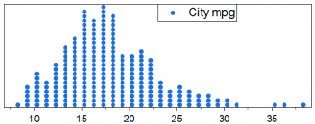
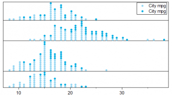
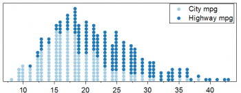
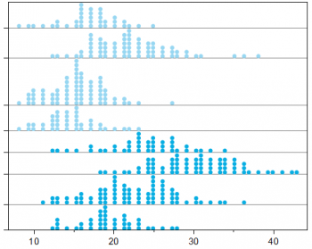
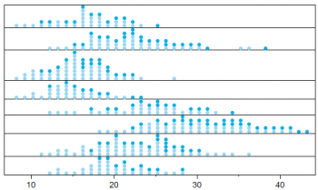
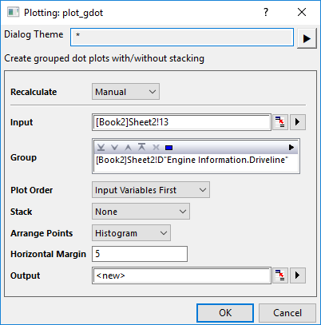

Punktdiagramm erstellen
Create-Dot Plot
Das Punktdiagramm ist ein statistisches Diagramm, das aus Datenpunkten besteht, die auf einer recht einfachen Skalierung gezeichnet sind, üblicherweise mit Hilfe von gefüllten Kreisen.
Origin unterstützt das Zeichnen von Punktdiagrammen im Menü Zeichnen:
Punktdiagrammtypen
 |
Punktdiagramm von einem Y |
Eingabe: Eine Y-Spalte
Menü: Zeichnen > Statistisch: Punktdiagramm
|
 |
Punktdiagramm von einem Y mit Gruppen |
Eingabe: Eine Y-Spalte und eine Gruppierungsspalte
Menü: Zeichnen > Kategorial: Gruppierte Punktdiagramme
|
 |
Punktdiagramm von einem Y mit gestapelten Gruppen |
Eingabe: Eine Y-Spalte und zwei Gruppierungsspalten
Menü: Zeichnen > Kategorisch: Gruppierte gestapelte Punktdiagramme
|
 |
Punktdiagramm mit mehreren Y |
Eingabe: Mehrere Y-Spalten (2 Spalten in diesem Beispiel)
Menü:Zeichnen > Statistisch: Punktdiagramm
|
 |
Punktdiagramm von mehreren Y, gestapelt |
Eingabe: Mehrere Y-Spalten (2 Spalten im Beispiel)
Menü: Zeichnen > Statistisch: Gestapelte Punktdiagramme
|
 |
Punktdiagramm von mehreren Y, mit Gruppen |
Eingabe: Mehrere Y-Spalten (2 Spalten im Beispiel) und eine Gruppierungsspalte
Menü: Zeichnen > Kategorial: Gruppierte Punktdiagramme
|
 |
Punktdiagramm von mehreren Y, mit gestapelten Gruppen |
Eingabe: Mehrere Y-Spalten (2 Spalten im Beispiel) und zwei Gruppierungsspalten
Menü: Zeichnen > Kategorisch: Gruppierte gestapelte Punktdiagramme
|
Punktdiagramme erstellen
Wenn Sie ein Punktdiagramm mit Gruppen zeichnen, wird die X-Funktion plot_gdot geöffnet, mit der Sie entscheiden können, wie die Punkte gezeichnet werden sollen:

Eingabe
Wählen Sie die Y-Datenspalte der Quelle zum Zählen. Sie können mehrere Spalten auswählen.
Gruppe
Wählen Sie die Gruppierungsspalte(n) aus.
Zeichnungsreihenfolge
Legen Sie fest, wie die Daten im Ausgabeblatt sortiert und gruppierte Punktdiagramme gezeichnet werden sollen, wenn es mehrere Eingabespalten gibt. Dieses Bedienelement ist das gleiche wie Ausgabespalten sortieren nach im Dialog Spalten entstapeln.
Es wird deaktiviert, wenn die Option Stapeln auf Eingabevariable, Letzte Gruppe oder Alle Gruppen gesetzt ist. Die Auswahl von Eingabevariable stapeln verwendet Gruppeninfo zuerst. Die Auswahl von Letzte Gruppe oder Alle Gruppen verwendet Eingabevariable zuerst.
Stapeln
Legen Sie fest, ob die Punktdiagramme gestapelt und wie sie in jeder Gruppe gestapelt werden sollen.
- Wenn Stapeln auf Kein gesetzt ist, teilen Sie die Eingabevariablendaten der Quelle mit Hilfe der Gruppenspalten auf und zeichnen Sie sie als gruppierte Punktdiagramme. Wenn die Eingabe mehrere Variablen + Gruppen sind und die Zeichnungsreihenfolge Eingabevariable zuerst ist, setzen Sie die Untergruppe auf die letzte Gruppenbeschriftungszeile im Blatt Output (Ausgabe). Falls die Zeichnungsreihenfolge Gruppeninfo zuerst ist, setzen Sie die Untergruppe auf Langnamenzeile im Blatt Output. Wenn die Eingabe eine Variable + mehrere Gruppen ist, setzen Sie die Untergruppe auf die letzte Gruppenbeschriftungszeile im Blatt Output (Ausgabe).
- Wenn Stapeln auf Eingabevariable/Letzte Gruppe/Alle Gruppen gesetzt ist, teilen Sie die Eingabevariablendaten mit Hilfe der Gruppenspalten auf und zeichnen Sie sie alle als gruppiertes Punktdiagramm. Wählen Sie Kumulativ für Stapeln und setzen Sie Teilgruppierung auf Nach Spaltenbeschriftung. Die Spaltenbeschriftung ist der Anwenderparameter der letzten Gruppe/der Gruppe über der letzten Gruppe/des Langnamens im Blatt Output (Ausgabe).
- Wenn Stapeln auf Alle gesetzt ist, wie Eingabevariable/Letzte Gruppe/Alle Gruppen, aber ohne eine Teilgruppierung festzulegen.
Punkte anordnen
Legen Sie fest, wie die Punkte angeordnet werden:
- Dichte: Das Punktdiagramm wird wie in einem Säulen-Punktdiagramm angeordnet, aber die Punkte werden an der Basislinie von jeder Zeichnung ausgerichtet. Es gibt keine Einteilung der Daten, die Datenanordnung bezieht sich auf die Größe des Datenpunkts.
- Histogramm: Wie ein Histogramm, aber es wird die Anzahl der Punkte anstatt von Balken gezeigt. Die Daten werden nach Klassen eingeteilt, die Punkte in jeder Klasse gezählt und dann die Symbole von der Basislinie aus entsprechend der Anzahl gezeichnet.
Dieses Bedienelement ist das gleiche wie Punkte anordnen auf der Registerkarte Daten im Dialog Details Zeichnung.
Horizontaler Rand
Legen Sie den horizontalen Rand fest, um die Seite an den Layer anzupassen, damit die Hilfsstrichsbeschriftungen angezeigt werden, insbesondere wenn es mehrere Tabellenzeilen auf der Y-Achse gibt.
Ausgabe
Geben Sie die ungestapelten Eingabespalten mit Hilfe festgelegter Gruppierungsspalte(n) aus.
Punktdiagramme benutzerdefiniert anpassen
Wenn Sie ein Punktdiagramm erstellt haben, können Sie das Punktdiagramm mit dem Dialog Details Zeichnung benutzerdefiniert anpassen:
Sie können auch auf das Zeichnungselement klicken, um mit der Minisymbolleiste benutzerdefiniert anzupassen.